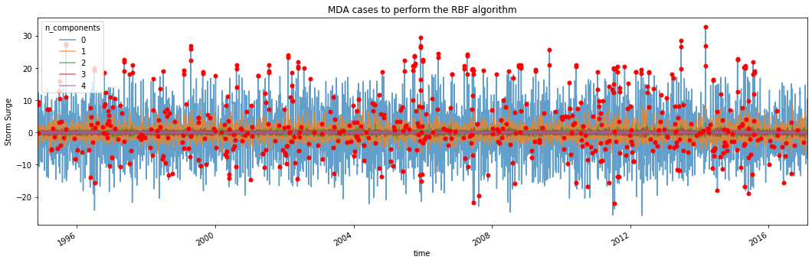
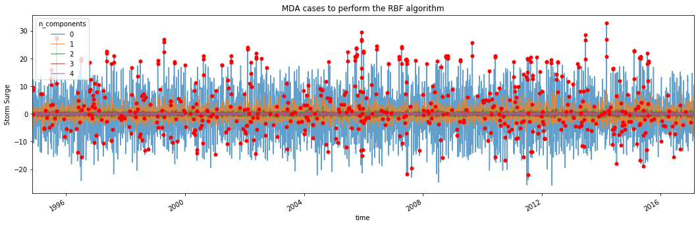

6. MDA - RBF model¶
In this notebook, we will perform a analysis using one of our most used methods, which involves MDA + RBF algorithms. The process will be the next:
First, the areas where the study is wanted to be performed are selected.
Next, we calculate the PCs of these areas, given the hourly / daily storm surge of the locations in that area.
After calculating the Stormsurge-PCs and the SLP (local) principal components, we then choose N cases from the total dataset, using the MDA algorithm.
Finally, we use RBF to interpolate the final storm-surge surface in all the areas / locations!!
6.1. Maximum Dissimilarity Algorithm (MDA)¶
In this way, the first important step to carry out this method is the selection of the maximum dissimilar cases, so the posterior reconstruction of all the cases can be performed correctly:

Fig. 6.1 This is a sketch representation of how the MDA algorithm works¶
This sketch shows the workflow followed in the selection step. The data is firstly normalized for the correct performance of the algorithm, then the euclidean distance is used for the calculation of the distance between the different vectors in the dataset. Finally, the selected data is de-normalized so it can be used and plotted together with the original information.
As it can be seen, the variables used are:
where \(PCn\) refers to the principal components of the sea-level-pressure fields and the \(SSn\) variables belongs to the principal components of the \(n\) locations of the selected area.
6.2. Reconstruction of the coastal wave climate with RBF¶
Once we have the selected cases, we now have a lot of different situations with different characteristics all along the coast so the reconstruction of the storm surge climate can be done.
The reconstruction of the storm surge in shallow waters is carried out by an interpolation from the selected case series that have been selected. The interpolation technique used is based on radial basis functions (RBF), very suitable for data with high dimensionality and not evenly distributed. There is a series of values of the real function \(f(x_i) \:\:\: i = 1, ..., N\) in the points \(x_1 , ..., x_N\). The RBF interpolation technique considers that the RBF function approximation consists of a linear combination of symmetrical radial functions centered on the given points. The objective function has the following expression:
interpolating the given values as follows:
where \(RBF\) is the interpolation function, \(p(x)\) is the linear polynomial in all the variables involved in the problem, \(a_i\) are the RBF adjustment coefficients, \(\Phi\) is the basic radial function, \(||\cdot||\) is the Euclidean norm and \(x_i\) are the centres of the RBF interpolation.

Fig. 6.2 This is the interpolation surface of the RBF technique¶
The polynomial \(p(x)\) in the expression of the RBF interpolation function is defined as a monomial base \({p_0, p_1 ,..., p_d}\). The first is a monomial, consisting of a number of grade one monomials equal to the dimensionality of the data, where \(b = {b_0 , b_1 ,..., b_d}\) are the coefficients of these monomials.
The radially based functions can have different expressions. Some of these radial functions contain a shape parameter that plays a very important role in the precision of the technique. In the methodology of propagation of the maritime climate, it has been considered the Gaussian radial function that depend on a shape parameter.
# common
import os
# pip
import numpy as np
import pandas as pd
import xarray as xr
# plotting
import matplotlib.pyplot as plt
import cartopy.crs as ccrs
# append sscode to path
import sys
sys.path.insert(0, os.path.join(os.path.abspath(''), '..'))
# custom
from sscode.data import Loader, load_moana_hindcast_ss
from sscode.mda_rbf import MDA_RBF_Model
from sscode.plotting.validation import plot_stats
6.3. Load data and linear model stats¶
We first load the data, and plot some multilinear regression statistics to compare…
# load the data
load_cfsr_moana_uhslc = Loader(
data_to_load=['cfsr','moana','uhslc'], load_winds=True,
plot=False, time_resample='1D'
)
# load the moana v2 hindcast (more ss and mask)
ss_grid = (load_moana_hindcast_ss(daily=True) * \
xr.open_dataarray('../data/bathymetry/nz_300m_elev_mask.nc'))\
.dropna(dim='lon',how='all').dropna(dim='lat',how='all')
ss_moanav2_site = xr.Dataset(
{
'ss': (('time','site'), ss_grid.values.reshape(
-1,len(ss_grid.lon)*len(ss_grid.lat))),
'lon': (('site'), list(ss_grid.lon.values)*int(
(len(ss_grid.lon)*len(ss_grid.lat))/len(ss_grid.lon))),
'lat': (('site'), np.repeat(ss_grid.lat.values,
(len(ss_grid.lon)*len(ss_grid.lat))/len(ss_grid.lat)))
}, coords={
'site': np.arange(len(ss_grid.lon)*len(ss_grid.lat)),
'time': ss_grid.time.values
}
)
# plot results
lm_stats = True
if lm_stats:
stats_local = xr.open_dataset(
'../data/statistics/stats_lm_local_daily.nc'
)
plot_stats(stats_local,plot_stats=['rmse','pearson','rscore'])
loading the sea-level-pressure fields...
loading daily resampled data...
loading the Moana v2 hindcast data...
loading and plotting the UHSLC tidal guages...
loading the Moana v2 hindcast data (ss)...
# construct the MDA + RBF object
mda_rbf_model = MDA_RBF_Model(
load_cfsr_moana_uhslc.predictand, load_cfsr_moana_uhslc.predictor_slp
)
Initializing the MDA + RBF constructor...
with longitudes = [168.1, 171.4, 167.5, 171.1, 173.5, 173.3, 175.1, 177.9, 172.6]
and
latitudes = [-44.2, -41.9, -47.2, -45.4, -42.5, -40.7, -40.2, -40.1, -34.3] !!
Lets calculate the storm surge pcs...

Lets calculate the slp pcs...
lets calculate the PCs...
calculating the gradient of the sea-level-pressure fields...
pressure/gradient predictor both with shape:
(11354, 9, 9)
calculated PCs matrix with shape:
(11352, 324)
plotting 1 components with 4 EOFs + PC...
being the EOFs the slp, the gradient, in steps t, t-1
# calculate the MDA + RBF adjustments
mda_rbf_model.calc_MDA_RBF([0,2,8])
MDA + RBF with 0.9999 per of pcs and 1500 samples!!
which means 33 PCs...
ix_scalar: 0, optimization: 352.39 | interpolation: 1.32 | sigma: 1.3195
ix_scalar: 1, optimization: 165.91 | interpolation: 1.63 | sigma: 1.6264
ix_scalar: 2, optimization: 279.45 | interpolation: 1.27 | sigma: 1.2713
ix_scalar: 3, optimization: 313.78 | interpolation: 1.42 | sigma: 1.4224
ix_scalar: 4, optimization: 136.98 | interpolation: 1.34 | sigma: 1.3402
ix_scalar: 5, optimization: 156.48 | interpolation: 1.18 | sigma: 1.1832
ix_scalar: 6, optimization: 333.97 | interpolation: 1.43 | sigma: 1.4304
ix_scalar: 7, optimization: 236.44 | interpolation: 1.26 | sigma: 1.2582
MDA + RBF with 0.9999 per of pcs and 1500 samples!!
which means 29 PCs...
ix_scalar: 0, optimization: 133.65 | interpolation: 1.21 | sigma: 1.2135
ix_scalar: 1, optimization: 177.27 | interpolation: 1.17 | sigma: 1.1669
ix_scalar: 2, optimization: 140.64 | interpolation: 1.21 | sigma: 1.2081
ix_scalar: 3, optimization: 121.72 | interpolation: 1.19 | sigma: 1.1865
ix_scalar: 4, optimization: 243.34 | interpolation: 1.35 | sigma: 1.3514
ix_scalar: 5, optimization: 185.85 | interpolation: 1.22 | sigma: 1.2244
ix_scalar: 6, optimization: 108.29 | interpolation: 1.18 | sigma: 1.1778
ix_scalar: 7, optimization: 132.05 | interpolation: 1.19 | sigma: 1.1899
MDA + RBF with 0.9999 per of pcs and 1500 samples!!
which means 34 PCs...
ix_scalar: 0, optimization: 203.83 | interpolation: 1.32 | sigma: 1.3200
ix_scalar: 1, optimization: 131.19 | interpolation: 1.31 | sigma: 1.3122
ix_scalar: 2, optimization: 140.31 | interpolation: 1.29 | sigma: 1.2891
ix_scalar: 3, optimization: 214.67 | interpolation: 1.24 | sigma: 1.2386
ix_scalar: 4, optimization: 120.75 | interpolation: 1.32 | sigma: 1.3178
ix_scalar: 5, optimization: 184.14 | interpolation: 2.46 | sigma: 2.4593
ix_scalar: 6, optimization: 159.54 | interpolation: 2.72 | sigma: 2.7184
ix_scalar: 7, optimization: 144.95 | interpolation: 1.34 | sigma: 1.3439
 
